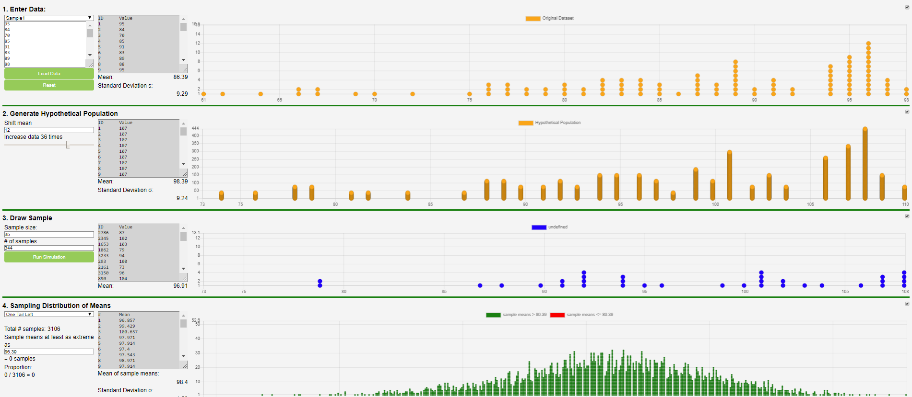
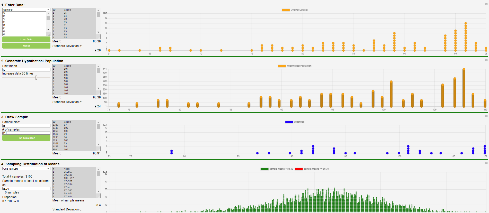

Ryan Bartoli
Index | Projects | Activities | ResumeSAVIS Senior Project
The project
SAVIS
My senior project, Statistics Analysis Visualizations for Introductory Statistics (SAVIS), is a website/standalone program to assist teachers in teaching statistics.
My teammates and I worked with CSUS statistics professor Rafael Diaz to create the software and translate it into Spanish so it can be used to teach hypothesis testing strategies to students in Mexico.
If you would like to try out our senior project, a link to the project and its downloadable versions can be found on Professor Diaz’ website.
One Proportion

Probability and Number of Tosses
In a problem to determine if a coin is fair, this feature offers a simulation of head outcomes based on Head Probability and the Number of Tosses performed.
The theory is most people consider a coin “fair” if there is an equal chance a coin will be heads or tails.
To mimic this, the program sets the default head probability to 0.5 and enables the user to then tip the balance.
Additionally, the user can determine the number of tosses they wish to calculate.
These tools together gives the user the adjustments needed to make a sample and generate its results.
Sampling
To perform a test of given probability and number of tosses, the user may add a sample and the results of that sample are displayed onto the graph.
A Binomial distribution is also displayed, obtained from gathering the head probability, # of tosses, and the sample size.
The more samples a user adds, the closer the sample generated graph will match with the binomial distribution graph.
Additionally, the mean and standard distribution of the sample’s results are generated.
Sampling with requirements
Once a sample graph is generated, the percentage of the amount of samples within range can be found using the min heads and max heads sliders.
Graph breakdown
Like the color key shows, red is the number of heads in 5 tosses per sample, blue is the binomial distribution, and green is the selected interval for the above function.
The proportion stated above corresponds to the selected area, which can be adjusted to fit specified dimensions of the graph.
The binomial distribution showcases where the red graph will eventually reach if given enough samples.
Two Proportions

Entering data
The function “Two Proportions” looks for the difference in proportions between two populations.
This can be useful for establishing a confidence interval.
his test is useful when you want to determine if two similar groups (e.g males and females) differ significantly on a single characteristic.
To enter data, we put two numbers in each column, or press the arrows on the right side of each box when hovered over to tick the numbers up or down.
One for successes and the other for failures for Group A.
We then input two more numbers into Group B. Once numbers are typed in the text field, the user should press the “Load Data” button.
Graph breakdown
Like the color key shows, green is successes and red represents failures and the other half of the proportion.
If the user hovers over each section of either the red or green bar, then we can see a tooltip that shows the exact proportion of either successes or failures in Group A or B in percentages.
Run Simulation
Utilizing the input from the Enter Data section, Run Simulation allows the user to be able to enter in a number of samples of that entered data to simulate.
It will also recalculate the the difference in proportions of each sample group.
The results will then be displayed in the adjacent graph.
Simulation Graph breakdown
After running the simulations, the proportions are then re-calculated and displayed on the right side.
Furthermore, on the left and right side, text is displayed showing the successes and failures.
Sampling Distribution of Difference of Proporitions
Based on the data ran above, the user is given the ability to perform three different color coded tail tests.
These include left and right tail, as well as two tail testing.
The user selects an extreme value for the selected test to be performed.
Additionally the mean of the sample differences, the standard deviation, total generated samples, the number selected in the tail case, and the proportion selected will be displayed.
Based on the requirements of the test, dots on the graph will be color coded either red or green.
Depending on which tail test is used, the amount selected and the proportion selected will change.
Displayed below is the left,right and two tailed tests, respectively.
One Mean

Entering data
To enter data, a user may either type their data directly into the highlighted box or drag and drop a .csv file into the box.
If the user does not have any data to use, they may use the drop down menu to select two sample data files.
Once the data has been entered, the page will display the data in the gray box and the mean of the data below.
The graph will populate with the x-axis as the value and the y-axis as the number of times that value shows up.
The graph will automatically shift the bounds to the minimum and maximum value of the data.
Generate Population
In the Generate Hypothetical Population section, the user will be able to generate a hypothetical population, based on the given data, to then later be drawn from the Draw Sample section.
The user will be able to shift the mean along the interval [-10, 10] and increase the amount of data generated by a flat multiple, from 0 to 50.
The gray box will display what the new data looks like, as well as the new mean.
The graph in box two will change based on the new inputs.
Draw Sample
In the Draw Sample section, the user will be able to draw a sample data set from the amplified hypothetical population previously generated.
The user can pick how many data points to randomly sample by changing the sample size.
If the sample size is larger then the size of the actual data then the simulation will not run.
The user can also pick how many times the program will draw from the population by changing the number in the box labeled # of Samples.
Once both boxes have been set, the user can click the run simulation button and a new sample will be generated.
The gray box will show what values were drawn, their ID, and the mean of the sample.
The graph to the right will also plot out the values drawn from the population.
Sampling Distribution of Means
In the fourth part of the page, the means generated in the Draw Sample box will be used to create the sample distribution of means.
Everytime the run simulation box is clicked and a new mean generated, it will be placed in the gray box and plotted on the graph.
The first drop down menu will allow the user to select how the graph will look; the dots will change color based on which tail is selected.
The dots that turn red will depend on the number in the box below.
Two Means

Entering data
There are two easy ways to enter data for the difference of two means test.
You can directly type your data into the text area, or you can drag and drop a .csv file into the text area.
Once you have some data entered you will need to click the “Load Data” button.
Once you do this, you will see the means of the two groups, as well as the difference of those means, displayed next to their respective label.
To help you visualize the data that was entered, a dot plot is generated.
he top dot plot represents the data from group one while, the dot plot below represents the data from group two.
Run Simulations
While it’s good to be able to have a simple representation of the data for our two groups, we can also run simulations on the data we enter.
To run a simulation you can simply click the “Run Simulation” button, and a single simulation will be run.
But, to save time, you can also type a higher number into the field, and it will run multiple simulations at the same time.
When we run a simulation, or a set of simulations, we are taking all of the members of the two populations, and randomizing where they are in the data set. This can be observed on the two dot plots next to the Run Simulations area of the screen.
You will see on the two dot plots, that the members from group one (the orange dots) and the members from group two (the purple dots) share space in the dot plot areas, unlike the top two dot plots where we see the two groups segregated.
Sampling Distribution of Difference of Means
This provided example is what we expect to see when no data has been loaded, and no simulations have been run.
After data has been run, next to “Original Dataset Difference of Means” we will see the difference of the two means displayed on the adjacent graph.
Based on the data ran above, the user is given the ability to perform three different color coded tail tests.
These include left and right tail, as well as two tail testing.The user selects an extreme value for the selected test to be performed.
Additionally the mean of the sample differences, the standard deviation, total generated samples, the number selected in the tail case, and the proportion selected will be displayed.
Based on the requirements of the test, dots on the graph will be color coded either red or green.
My senior project, Statistics Analysis Visualizations for Introductory Statistics (SAVIS), is a website/standalone program to assist teachers in teaching statistics.
My teammates and I worked with CSUS statistics professor Rafael Diaz to create the software and translate it into Spanish so it can be used to teach hypothesis testing strategies to students in Mexico.
If you would like to try out our senior project, a link to the project and its downloadable versions can be found on Professor Diaz’ website.
One Proportion
Probability and Number of Tosses
In a problem to determine if a coin is fair, this feature offers a simulation of head outcomes based on Head Probability and the Number of Tosses performed. The theory is most people consider a coin “fair” if there is an equal chance a coin will be heads or tails. To mimic this, the program sets the default head probability to 0.5 and enables the user to then tip the balance. Additionally, the user can determine the number of tosses they wish to calculate. These tools together gives the user the adjustments needed to make a sample and generate its results.
Sampling
To perform a test of given probability and number of tosses, the user may add a sample and the results of that sample are displayed onto the graph. A Binomial distribution is also displayed, obtained from gathering the head probability, # of tosses, and the sample size. The more samples a user adds, the closer the sample generated graph will match with the binomial distribution graph. Additionally, the mean and standard distribution of the sample’s results are generated.
Sampling with requirements
Once a sample graph is generated, the percentage of the amount of samples within range can be found using the min heads and max heads sliders.
Graph breakdown
Like the color key shows, red is the number of heads in 5 tosses per sample, blue is the binomial distribution, and green is the selected interval for the above function. The proportion stated above corresponds to the selected area, which can be adjusted to fit specified dimensions of the graph. The binomial distribution showcases where the red graph will eventually reach if given enough samples.
Two Proportions
Entering data
The function “Two Proportions” looks for the difference in proportions between two populations. This can be useful for establishing a confidence interval. his test is useful when you want to determine if two similar groups (e.g males and females) differ significantly on a single characteristic. To enter data, we put two numbers in each column, or press the arrows on the right side of each box when hovered over to tick the numbers up or down. One for successes and the other for failures for Group A. We then input two more numbers into Group B. Once numbers are typed in the text field, the user should press the “Load Data” button.
Graph breakdown
Like the color key shows, green is successes and red represents failures and the other half of the proportion. If the user hovers over each section of either the red or green bar, then we can see a tooltip that shows the exact proportion of either successes or failures in Group A or B in percentages.
Run Simulation
Utilizing the input from the Enter Data section, Run Simulation allows the user to be able to enter in a number of samples of that entered data to simulate. It will also recalculate the the difference in proportions of each sample group. The results will then be displayed in the adjacent graph.
Simulation Graph breakdown
After running the simulations, the proportions are then re-calculated and displayed on the right side. Furthermore, on the left and right side, text is displayed showing the successes and failures.
Sampling Distribution of Difference of Proporitions
Based on the data ran above, the user is given the ability to perform three different color coded tail tests. These include left and right tail, as well as two tail testing. The user selects an extreme value for the selected test to be performed. Additionally the mean of the sample differences, the standard deviation, total generated samples, the number selected in the tail case, and the proportion selected will be displayed. Based on the requirements of the test, dots on the graph will be color coded either red or green. Depending on which tail test is used, the amount selected and the proportion selected will change. Displayed below is the left,right and two tailed tests, respectively.
One Mean
Entering data
To enter data, a user may either type their data directly into the highlighted box or drag and drop a .csv file into the box. If the user does not have any data to use, they may use the drop down menu to select two sample data files. Once the data has been entered, the page will display the data in the gray box and the mean of the data below. The graph will populate with the x-axis as the value and the y-axis as the number of times that value shows up. The graph will automatically shift the bounds to the minimum and maximum value of the data.
Generate Population
In the Generate Hypothetical Population section, the user will be able to generate a hypothetical population, based on the given data, to then later be drawn from the Draw Sample section. The user will be able to shift the mean along the interval [-10, 10] and increase the amount of data generated by a flat multiple, from 0 to 50. The gray box will display what the new data looks like, as well as the new mean. The graph in box two will change based on the new inputs.
Draw Sample
In the Draw Sample section, the user will be able to draw a sample data set from the amplified hypothetical population previously generated. The user can pick how many data points to randomly sample by changing the sample size. If the sample size is larger then the size of the actual data then the simulation will not run. The user can also pick how many times the program will draw from the population by changing the number in the box labeled # of Samples. Once both boxes have been set, the user can click the run simulation button and a new sample will be generated. The gray box will show what values were drawn, their ID, and the mean of the sample. The graph to the right will also plot out the values drawn from the population.
Sampling Distribution of Means
In the fourth part of the page, the means generated in the Draw Sample box will be used to create the sample distribution of means. Everytime the run simulation box is clicked and a new mean generated, it will be placed in the gray box and plotted on the graph. The first drop down menu will allow the user to select how the graph will look; the dots will change color based on which tail is selected. The dots that turn red will depend on the number in the box below.
Two Means
Entering data
There are two easy ways to enter data for the difference of two means test. You can directly type your data into the text area, or you can drag and drop a .csv file into the text area. Once you have some data entered you will need to click the “Load Data” button. Once you do this, you will see the means of the two groups, as well as the difference of those means, displayed next to their respective label. To help you visualize the data that was entered, a dot plot is generated. he top dot plot represents the data from group one while, the dot plot below represents the data from group two.
Run Simulations
While it’s good to be able to have a simple representation of the data for our two groups, we can also run simulations on the data we enter. To run a simulation you can simply click the “Run Simulation” button, and a single simulation will be run. But, to save time, you can also type a higher number into the field, and it will run multiple simulations at the same time. When we run a simulation, or a set of simulations, we are taking all of the members of the two populations, and randomizing where they are in the data set. This can be observed on the two dot plots next to the Run Simulations area of the screen. You will see on the two dot plots, that the members from group one (the orange dots) and the members from group two (the purple dots) share space in the dot plot areas, unlike the top two dot plots where we see the two groups segregated.
Sampling Distribution of Difference of Means
This provided example is what we expect to see when no data has been loaded, and no simulations have been run. After data has been run, next to “Original Dataset Difference of Means” we will see the difference of the two means displayed on the adjacent graph. Based on the data ran above, the user is given the ability to perform three different color coded tail tests. These include left and right tail, as well as two tail testing.The user selects an extreme value for the selected test to be performed. Additionally the mean of the sample differences, the standard deviation, total generated samples, the number selected in the tail case, and the proportion selected will be displayed. Based on the requirements of the test, dots on the graph will be color coded either red or green.